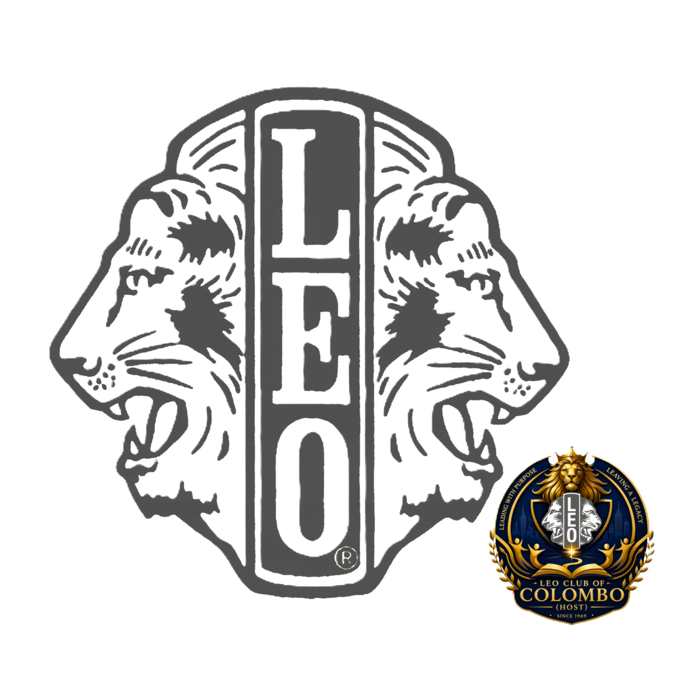

The Leo Club of Colombo (Host) is proudly recognized as Sri Lanka’s oldest Leo club, founded in 1969 and shaped by generations of service-minded leaders.
From humble beginnings to a modern force for good, the club has continued to grow through leadership, compassion, and innovation. Being part of this legacy means joining a community that has long believed service is not just a duty, but a lifestyle.
Why our story stands apart
- Established in 1969 with a strong foundation in service
- Backed by the spirit of the Lions movement and the energy of youth
- Focused on leadership, community impact, and future-ready action
